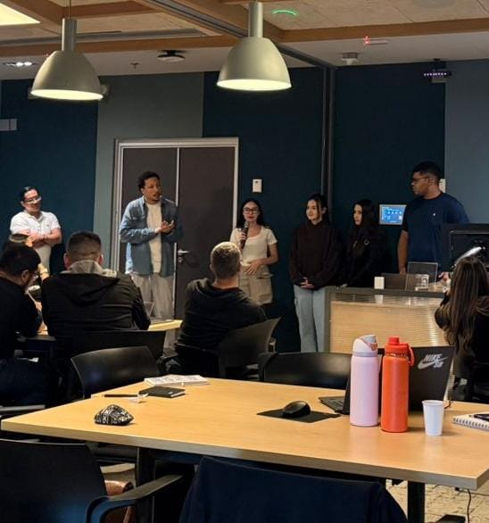
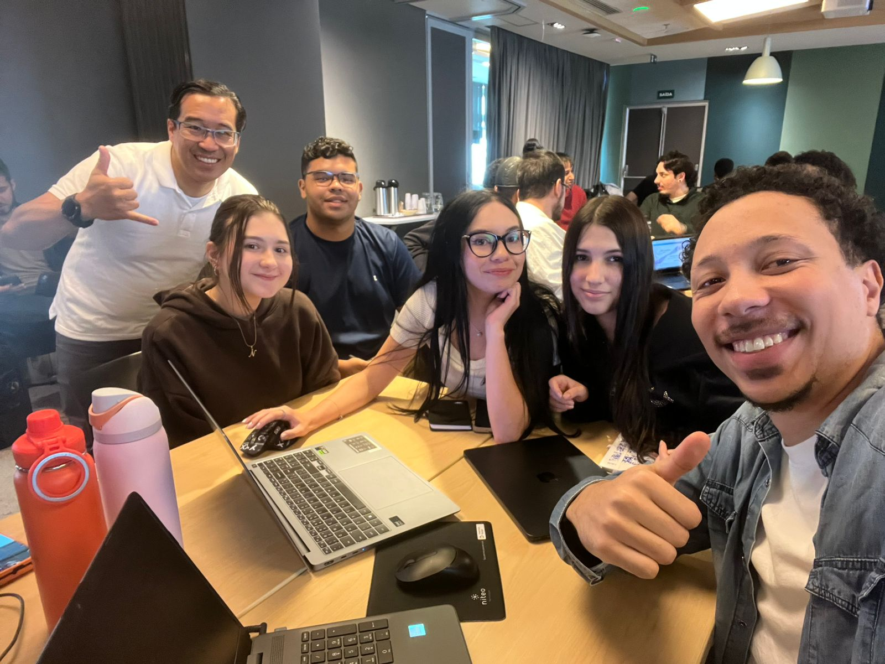
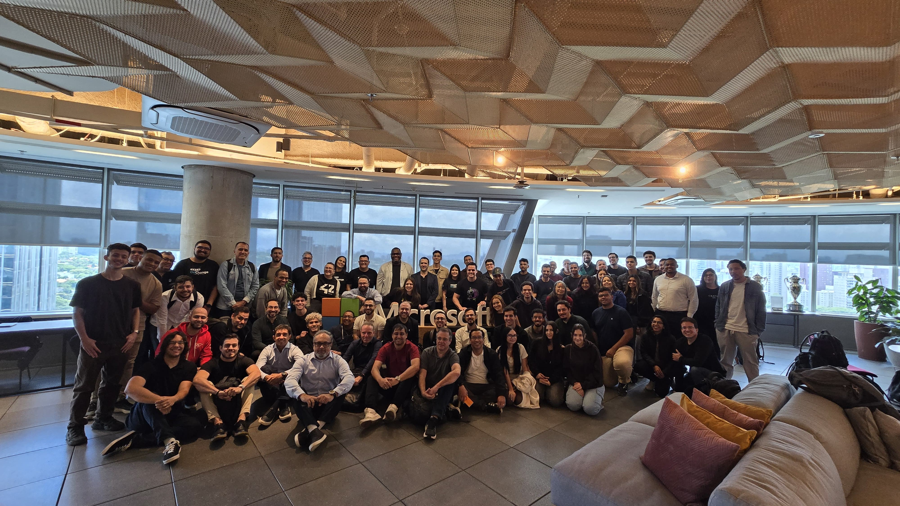

Microsoft AI Camp
Microsoft • 2026
Sobre o Evento
Participação no Copilot Developer Camp, realizado na Microsoft, com foco prático em AI Agents e soluções baseadas em Copilot. Durante o ideathon, desenvolvemos um Agente de IA para auxiliar a adaptação de novos colaboradores, aplicando conceitos de IA e DevOps em um desafio real do mercado.
Meu Papel
Apresentação do projeto e integração da lógica do sistema.
Tecnologias
microsoft Copilot, APi, Inteligência Artificial, DevOps e Automação.
Aprendizados
Trabalho em equipe, comunicação técnica e validação de ideias.
Momentos do Evento


